#> # A tibble: 9 × 2
#> tv_shows exam
#> <chr> <chr>
#> 1 1 0
#> 2 1 0
#> 3 1 1
#> 4 1 1
#> 5 ... ...
#> 6 0 0
#> 7 0 0
#> 8 0 1
#> 9 0 1Binomial GLM
Filippo Gambarota
University of Padova
2023
Last Update: 2023-11-29
Example: Passing the exam
We want to measure the impact of watching tv-shows on the probability of passing the statistics exam.
exam: passing the exam (1 = “passed”, 0 = “failed”)tv_shows: watching tv-shows regularly (1 = “yes”, 0 = “no”)
Example: Passing the exam
We can create the contingency table
Example: Passing the exam
Each cell probability \(p_{ij}\) is computed as \(p_{ij}/n\)
Example: Passing the exam - Odds
The most common way to analyze a 2x2 contingency table is using the odds ratio (OR). Firsly let’s define the odds of success as:
\[\begin{align*} odds = \frac{p}{1 - p} \\ p = \frac{odds}{odds + 1} \end{align*}\]
- the odds are non-negative, ranging between 0 and \(+\infty\)
- an odds of e.g. 3 means that we expect 3 success for each failure
Example: Passing the exam - Odds
For the exam example:
Example: Passing the exam - Odds Ratio
The OR is a ratio of odds:
\[ OR = \frac{\frac{p_1}{1 - p_1}}{\frac{p_2}{1 - p_2}} \]
- OR ranges between 0 and \(+\infty\). When \(OR = 1\) the odds for the two conditions are equal
- An e.g. \(OR = 3\) means that being in the condition at the numerator increase 3 times the odds of success
Example: Passing the exam - Odds Ratio
Why using these measure?
The odds have an interesting property when taking the logarithm. We can express a probability \(p\) using a scale ranging \([-\infty, +\infty]\)
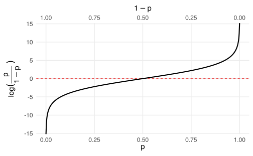
Another example, Teddy Child
We considered a Study conducted by the University of Padua (TEDDY Child Study, 2020)1. Within the study, researchers asked the participants (mothers of a young child) about the presence of post-partum depression and measured the parental stress using the PSI-Parenting Stress Index.
| ID | Parental_stress | Depression_pp |
|---|---|---|
| 1 | 75 | No |
| 2 | 51 | No |
| 3 | 76 | No |
| 4 | 88 | No |
| ... | ... | ... |
| 376 | 67 | No |
| 377 | 71 | No |
| 378 | 63 | No |
| 379 | 70 | No |
Another example, Teddy Child
We want to see if the parental stress increase the probability of having post-partum depression:
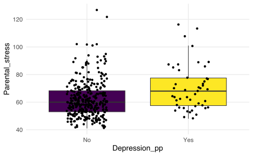
Another example, Teddy Child
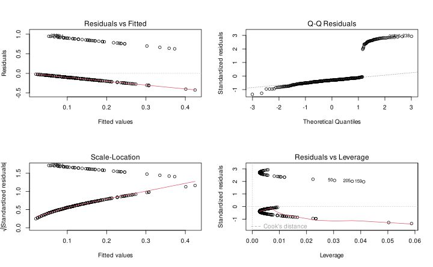
Another example, Teddy Child
Let’s start by fitting a linear model Depression_pp ~ Parental_stress. We consider “Yes” as 1 and “No” as 0.
#>
#> Call:
#> lm(formula = Depression_pp01 ~ Parental_stress, data = teddy)
#>
#> Residuals:
#> Min 1Q Median 3Q Max
#> -0.42473 -0.13768 -0.10003 -0.05768 0.94702
#>
#> Coefficients:
#> Estimate Std. Error t value Pr(>|t|)
#> (Intercept) -0.172900 0.077561 -2.229 0.026389 *
#> Parental_stress 0.004706 0.001201 3.919 0.000105 ***
#> ---
#> Signif. codes: 0 '***' 0.001 '**' 0.01 '*' 0.05 '.' 0.1 ' ' 1
#>
#> Residual standard error: 0.3239 on 377 degrees of freedom
#> Multiple R-squared: 0.03915, Adjusted R-squared: 0.0366
#> F-statistic: 15.36 on 1 and 377 DF, p-value: 0.0001054Another example, Teddy Child
Let’s add the fitted line to our plot:
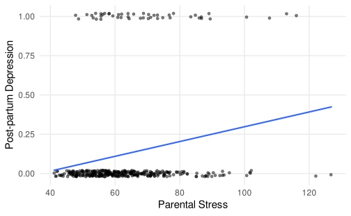
Another example, Teddy Child
… and check the residuals, pretty bad right?

Another example, Teddy Child
As for the exam example, we could compute a sort of contingency table despite the Parental_stress is a numerical variable by creating some discrete categories (just for exploratory analysis):
Another example, Teddy Child
Ideally, we could compute the increase in the odds of having the post-partum depression as the parental stress increase. In fact, as we are going to see, the Binomial GLM is able to estimate the non-linear increase in the probability.
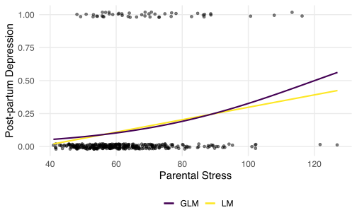
Binomial GLM
- The random component of a Binomial GLM the binomial distribution with parameter \(p\)
- The systematic component is a linear combination of predictors and coefficients \(\boldsymbol{\beta X}\)
- The link function is a function that map probabilities into the \([-\infty, +\infty]\) range.
Logit Link
The logit link is the most common link function when using a binomial GLM:
\[ log \left(\frac{p}{1 - p}\right) = \beta_0 + \beta_{1}X_{1} + ...\beta_pX_p \]
The inverse of the logit maps again the probability into the \([0, 1]\) range:
\[ p = \frac{e^{\beta_0 + \beta_{1}X_{1} + ...\beta_pX_p}}{1 + e^{\beta_0 + \beta_{1}X_{1} + ...\beta_pX_p}} \]
Logit Link
Thus with a single numerical predictor \(x\) the relationship between \(x\) and \(p\) in non-linear on the probability scale but linear on the logit scale.
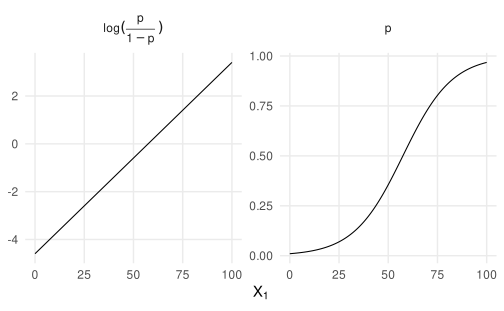
Logit Link
The problem is that effects are non-linear, thus is more difficult to interpret and report model results
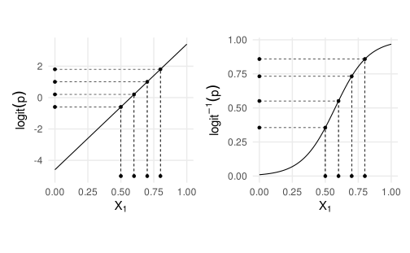
Model fitting in R
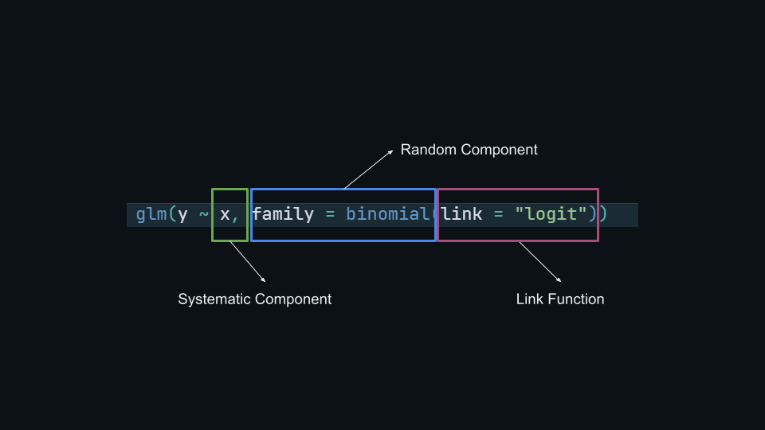
The big picture…
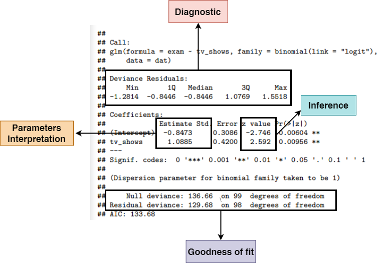
Model fitting in R
We can model the contingency table presented before. We put data in binary form:
#> tv_shows
#> exam 0 1
#> 0 35 22
#> 1 15 28#> # A tibble: 9 × 2
#> tv_shows exam
#> <chr> <chr>
#> 1 1 0
#> 2 1 1
#> 3 1 1
#> 4 1 1
#> 5 ... ...
#> 6 0 0
#> 7 0 1
#> 8 0 0
#> 9 0 0Intercept only model
Let’s start from the simplest model (often called null model) where there are no predictors:
#>
#> Call:
#> glm(formula = exam ~ 1, family = binomial(link = "logit"), data = dat)
#>
#> Deviance Residuals:
#> Min 1Q Median 3Q Max
#> -1.060 -1.060 -1.060 1.299 1.299
#>
#> Coefficients:
#> Estimate Std. Error z value Pr(>|z|)
#> (Intercept) -0.2819 0.2020 -1.395 0.163
#>
#> (Dispersion parameter for binomial family taken to be 1)
#>
#> Null deviance: 136.66 on 99 degrees of freedom
#> Residual deviance: 136.66 on 99 degrees of freedom
#> AIC: 138.66
#>
#> Number of Fisher Scoring iterations: 4Intercept only model
When fitting an intercept-only model, the parameter is the average value of the y variable:
\[\begin{align*} \log(\frac{p}{1 - p}) = \beta_0 \\ p = \frac{e^{\beta_0}}{1 + e^{\beta_0}} \end{align*}\]
Intercept only model
In R, the \(logit(p)\) is computed using qlogis() that is the q + logis combination of functions to work with probability distributions. The \(logit^{-1}\) thus the inverse of the logit function is plogis():
Link function (TIPS)
If you are not sure about how to transform using the link function you can directly access the family() object in R that contains the appropriate link function and the corresponding inverse.
Model with \(X\)
Now we can add the tv_shows predictor. Now the model has two coefficients. Given that the tv_shows is a binary variable, the intercept is the average y when tv_shows is 0, and the tv_shows coefficient is the increase in y for a unit increase in tv_shows:
#>
#> Call:
#> glm(formula = exam ~ tv_shows, family = binomial(link = "logit"),
#> data = dat)
#>
#> Deviance Residuals:
#> Min 1Q Median 3Q Max
#> -1.2814 -0.8446 -0.8446 1.0769 1.5518
#>
#> Coefficients:
#> Estimate Std. Error z value Pr(>|z|)
#> (Intercept) -0.8473 0.3086 -2.746 0.00604 **
#> tv_shows 1.0885 0.4200 2.592 0.00956 **
#> ---
#> Signif. codes: 0 '***' 0.001 '**' 0.01 '*' 0.05 '.' 0.1 ' ' 1
#>
#> (Dispersion parameter for binomial family taken to be 1)
#>
#> Null deviance: 136.66 on 99 degrees of freedom
#> Residual deviance: 129.68 on 98 degrees of freedom
#> AIC: 133.68
#>
#> Number of Fisher Scoring iterations: 4Model with \(X\)
Thinking about our data, the (Intercept) is the probability of passing the exam without watching tv-shows. The tv_shows (should be) the difference in the probability of passing the exam between people who watched or did not watched tv-shows, BUT:
- we are on the logit scale. Thus we are modelling log(odds) and not probabilities
- a difference on the log scale is a ratio on the raw scale. Thus taking the exponential of
tv_showswe obtain the ratio of odds of passing the exam watching vs non-watching tv-shows. Do you remember something?
Model with \(X\)
The tv_shows is exactly the Odds Ratio that we calculated on the contingency table:
Parameter Intepretation
Model Intepretation
Given the non-linearity and the link function, parameter intepretation is not easy for GLMs. In the case of the Binomial GLM we will see:
- interpreting model coefficients on the linear and logit scale
- odds ratio (already introduced)
- the divide by 4 rule (Gelman et al., 2020; Gelman & Hill, 2006)
- marginal effects
- predicted probabilities
Intepreting model coefficients
Models coefficients are interpreted in the same way as standard regression models. The big difference concerns:
- numerical predictors
- categorical predictors
Using contrast coding and centering/standardizing we can make model coefficients easier to intepret.
Categorical predictors
We use a categorical predictor with \(p\) levels, the model will estimate \(p - 1\) parameters. The interpretation of these parameters is controlled by the contrast coding. In R the default is the treatment coding (or dummy coding). Essentially R create \(p - 1\) dummy variables (0 and 1) where 0 is the reference level (usually the first category) and 1 is the current level. We can see the coding scheme using the model.matrix() function that return the \(\boldsymbol{X}\) matrix:
#> # A tibble: 9 × 2
#> X.Intercept. tv_shows
#> <chr> <chr>
#> 1 1 1
#> 2 1 1
#> 3 1 1
#> 4 1 1
#> 5 ... ...
#> 6 1 0
#> 7 1 0
#> 8 1 0
#> 9 1 0Categorical predictors
In the simple case of the exam dataset, the intercept (\(\beta_0\)) is the reference level (default to 0 because is the first) and \(\beta_0\) is the difference between the actual level and the reference level. If we change the order of the levels we could change the intercept value while \(\beta_1\) will be the same. As an example we could use the so-called sum to zero coding where instead of assigning 0 and 1 we use different values. For example assigning -0.5 and 0.5 will make the intercept the grand-mean:
Categorical predictors
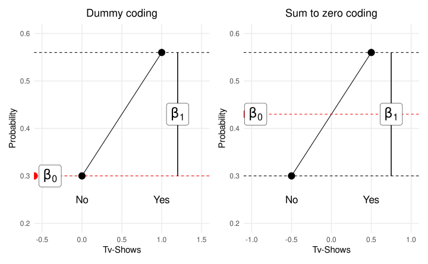
Numerical predictors
With numerical predictors the idea is the same as categorical predictors. In fact, categorical predictors are converted into numbers (i.e., 0 and 1 or -0.5 and 0.5). The only caveat is that the effects are linear only the logit scale. Thus \(\beta_1\) is interpreted in the same way as standard linear models only on the link-function scale. For the binomial
GLM the \(\beta_1\) is the increase in the \(log(odds(p))\) for a unit-increase in the \(x\). In the response (probability) scale, the \(\beta_1\) is the multiplicative increase in the odds of \(y = 1\) for a unit increase in the predictor.
Numerical predictors
With numerical predictors we could mean-center and or standardize the predictors. With centering (similarly to the categorical example) we change the interpretation of the intercept. Standardizing is helpful to have more meaningful \(\beta\) values. The \(\beta_i\) of a centered predictor is the increase in \(y\) for a increase in one standard deviation of \(x\).
\[ x_{cen} = x_i - \hat x \]
\[ x_{z} = \frac{x_i - \hat x}{\sigma_x} \]
Numerical predictors
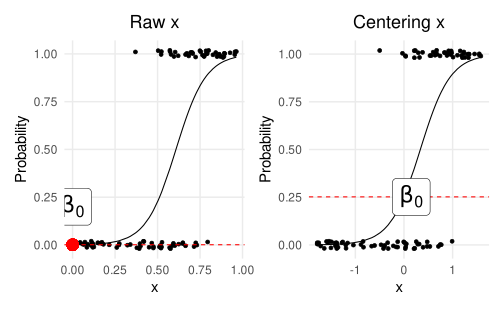
Numerical predictors
Let’s return to our teddy child example and fitting the proper model:
fit_glm <- glm(Depression_pp01 ~ Parental_stress, data = teddy, family = binomial(link = "logit"))
summary(fit_glm)#>
#> Call:
#> glm(formula = Depression_pp01 ~ Parental_stress, family = binomial(link = "logit"),
#> data = teddy)
#>
#> Deviance Residuals:
#> Min 1Q Median 3Q Max
#> -1.2852 -0.5165 -0.4509 -0.3861 2.3096
#>
#> Coefficients:
#> Estimate Std. Error z value Pr(>|z|)
#> (Intercept) -4.323906 0.690689 -6.260 3.84e-10 ***
#> Parental_stress 0.036015 0.009838 3.661 0.000251 ***
#> ---
#> Signif. codes: 0 '***' 0.001 '**' 0.01 '*' 0.05 '.' 0.1 ' ' 1
#>
#> (Dispersion parameter for binomial family taken to be 1)
#>
#> Null deviance: 284.13 on 378 degrees of freedom
#> Residual deviance: 271.23 on 377 degrees of freedom
#> AIC: 275.23
#>
#> Number of Fisher Scoring iterations: 5Numerical predictors
The (Intercept) (\(\beta_0\)) is the probability of having post-partum depression for a mother with parental stress zero (maybe better centering?)
\[ p(yes|x = 0) = g^{-1}(\beta_0) \]
Numerical predictors
The Parental_stress (\(\beta_1\)) is the increase in the \(log(odds)\) of having the post-partum depression for a unit increase in the parental stress index. If we take the exponential of \(\beta_1\) we obtain the increase in the \(odds\) of having post-partum depression for a unit increase in parental stress index.
Numerical predictors
The problem is that, as shown before, the effects are non-linear on the probability scale while are linear on the logit scale. On the logit scale, all differences are constant:
Numerical predictors
While on the probability scale, the differences are not the same. This is problematic when interpreting the results of a Binomial GLM with a numerical predictor.
Divide by 4 rule
The divide by 4 rule is a very easy way to evaluate the effect of a continuous predictor.
Given the non-linearity, the derivative of the logistic function (i.e., the slope) is maximal for probabilities around ~\(0.5\).
In fact, \(\beta_i p (1 - p)\) is maximized when \(p = 0.5\) turning into \(\beta_i 0.25\) (i.e., dividing by 4).
Dividing \(\beta/4\) we obtain the maximal slope thus the maximal difference in probability.
Divide by 4 rule
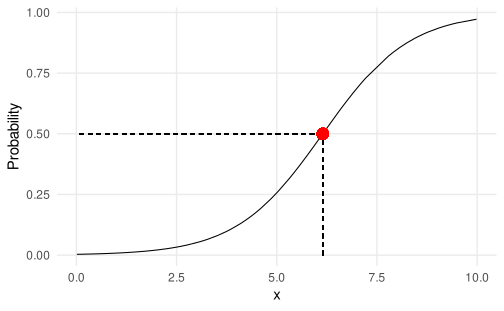
Predicted probabilities
In a similar way we can use the inverse logit function to find the predicted probability specific values of \(x\). For example, the difference between \(p(y = 1|x = 2.5) - p(y = 1|x = 5)\) can be calculated using the model equation:
- \(logit^{-1}p(y = 1|x = 2.5) = \frac{e^{\beta_0 + \beta_1 2.5}}{1 + e^{\beta_0 + \beta_1 2.5}}\)
- \(logit^{-1}p(y = 1|x = 5) = \frac{e^{\beta_0 + \beta_1 5}}{1 + e^{\beta_0 + \beta_1 5}}\)
- \(logit^{-1}p(y = 1|x = 5) - logit^{-1}p(y = 1|x = 2.5)\)
Predicted probabilities
In R we can use directly the predict() function with the argument type = "response" to return the predicted probabilities instead of the logits:
Predicted probabilities
I have written the epredict() function that extend the predict() function giving some useful messages when computing predictions. you can use it with every model and also with multiple predictors.
Marginal effects
A marginal effect measures the association between a change in a predictor (\(x\)), and a change in the response \(y\).
The slope can be evaluated for any level of \(x\). In fact, the divide-by-4 rule is the maximal slope evaluated at a specific \(x\).
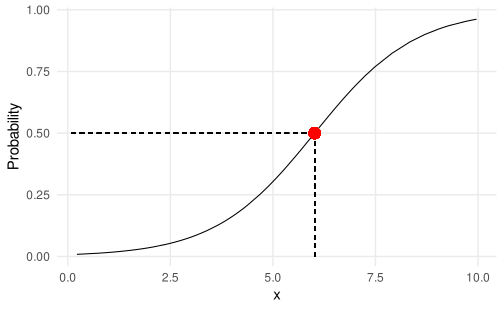
Marginal effects
The divide-by-4 rule is the maximal marginal effect. The average marginal effects is the average of all slopes. This can be easily done with the marginaleffects package:
library(marginaleffects)
# all marginal effects
slopes(fit)
#> # A tibble: 100 × 14
#> rowid term estimate std.error statistic p.value s.value conf.low conf.high
#> <int> <chr> <dbl> <dbl> <dbl> <dbl> <dbl> <dbl> <dbl>
#> 1 1 x 0.00403 0.00354 1.14 2.55e-1 1.97 -2.91e-3 0.0110
#> 2 2 x 0.137 0.0277 4.95 7.47e-7 20.4 8.28e-2 0.191
#> 3 3 x 0.0489 0.0213 2.30 2.15e-2 5.54 7.23e-3 0.0906
#> 4 4 x 0.0383 0.0188 2.04 4.15e-2 4.59 1.48e-3 0.0750
#> 5 5 x 0.222 0.0407 5.45 4.91e-8 24.3 1.42e-1 0.302
#> 6 6 x 0.0526 0.0193 2.72 6.48e-3 7.27 1.47e-2 0.0905
#> 7 7 x 0.0811 0.0229 3.54 3.98e-4 11.3 3.62e-2 0.126
#> 8 8 x 0.199 0.0386 5.16 2.52e-7 21.9 1.23e-1 0.275
#> 9 9 x 0.00353 0.00319 1.11 2.68e-1 1.90 -2.72e-3 0.00979
#> 10 10 x 0.0270 0.0136 1.99 4.68e-2 4.42 3.82e-4 0.0537
#> # ℹ 90 more rows
#> # ℹ 5 more variables: predicted_lo <dbl>, predicted_hi <dbl>, predicted <dbl>,
#> # y <int>, x <dbl>Marginal effects
#> # A tibble: 1 × 14
#> rowid term estimate std.error statistic p.value s.value conf.low conf.high
#> <int> <chr> <dbl> <dbl> <dbl> <dbl> <dbl> <dbl> <dbl>
#> 1 1 x 0.177 0.0338 5.22 1.76e-7 22.4 0.110 0.243
#> # ℹ 5 more variables: predicted_lo <dbl>, predicted_hi <dbl>, predicted <dbl>,
#> # x <dbl>, y <int>#> # A tibble: 1 × 8
#> term estimate std.error statistic p.value s.value conf.low conf.high
#> <chr> <dbl> <dbl> <dbl> <dbl> <dbl> <dbl> <dbl>
#> 1 x 0.0934 0.00312 29.9 5.94e-197 652. 0.0873 0.0995Marginal effects
With multiple variables, marginal effects are also useful to see the effect of one predictor fixing the level of others. Let’s simulate a model with two predictors:
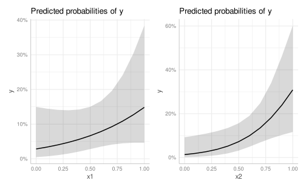
Marginal effects
We can see the marginal effects (each, average or marginal) for the \(x1\) while fixing \(x2\) to the mean:
#> # A tibble: 200 × 15
#> rowid term estimate std.error statistic p.value s.value conf.low conf.high
#> <int> <chr> <dbl> <dbl> <dbl> <dbl> <dbl> <dbl> <dbl>
#> 1 1 x1 0.0991 0.0624 1.59 0.112 3.16 -0.0232 0.221
#> 2 2 x1 0.191 0.195 0.979 0.327 1.61 -0.191 0.573
#> 3 3 x1 0.0805 0.0419 1.92 0.0546 4.20 -0.00157 0.163
#> 4 4 x1 0.0555 0.0227 2.45 0.0145 6.11 0.0110 0.100
#> 5 5 x1 0.0499 0.0204 2.45 0.0145 6.11 0.00990 0.0899
#> 6 6 x1 0.0998 0.0632 1.58 0.114 3.13 -0.0241 0.224
#> 7 7 x1 0.135 0.110 1.23 0.219 2.19 -0.0803 0.350
#> 8 8 x1 0.0605 0.0254 2.38 0.0174 5.84 0.0106 0.110
#> 9 9 x1 0.220 0.241 0.913 0.361 1.47 -0.252 0.691
#> 10 10 x1 0.152 0.134 1.13 0.258 1.95 -0.111 0.414
#> # ℹ 190 more rows
#> # ℹ 6 more variables: predicted_lo <dbl>, predicted_hi <dbl>, predicted <dbl>,
#> # x1 <dbl>, x2 <dbl>, y <int>Inverse estimation1
Sometimes it is useful to do what is called inverse estimation, thus predicting the \(x\) level associated with a certain \(y\). In this case the \(x\) producing a certain \(p\) of response.
Sometimes this is called median effective dose when finding the \(x\) level producing \(50\%\) of correct responses.
We can use the MASS::dose.p() function:
Inverse estimation and Psychophysics
In Psychophysics it is common to do the inverse estimation to estimate the detection or performance threshold. For example, estimating the \(x\) level associated with a certain probability of success e.g. 50%.
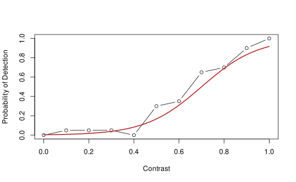
Inverse estimation and Psychophysics
Let’s simulate and ideal observer that respond to stimuli with different contrast:
Code
th <- 0.7 # -(b0/b1)
slope <- 1/8
b1 <- 1/slope
b0 <- -th*b1
x <- rep(seq(0, 1, 0.1), each = 20)
p <- plogis(b0 + b1 * x)
y <- rbinom(length(x), 1, p)
yp <- tapply(y, x, mean)
xc <- unique(x)
plot(xc, yp, type = "b", ylim = c(0, 1), xlab = "Contrast", ylab = "Probability of Detection")
curve(plogis(x, th, slope), add = TRUE, col = "firebrick", lwd = 2)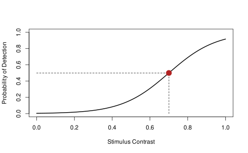
Inverse estimation and Psychophysics
#>
#> Call:
#> glm(formula = y ~ x, family = binomial(link = "logit"))
#>
#> Deviance Residuals:
#> Min 1Q Median 3Q Max
#> -2.0471 -0.6306 -0.2320 0.5124 2.6938
#>
#> Coefficients:
#> Estimate Std. Error z value Pr(>|z|)
#> (Intercept) -4.9927 0.6644 -7.515 5.69e-14 ***
#> x 6.9569 0.9410 7.393 1.44e-13 ***
#> ---
#> Signif. codes: 0 '***' 0.001 '**' 0.01 '*' 0.05 '.' 0.1 ' ' 1
#>
#> (Dispersion parameter for binomial family taken to be 1)
#>
#> Null deviance: 273.67 on 219 degrees of freedom
#> Residual deviance: 163.71 on 218 degrees of freedom
#> AIC: 167.71
#>
#> Number of Fisher Scoring iterations: 6Inverse estimation and Psychophysics
We can estimate the threshold and slope of the psychometric function using the equations from Knoblauch & Maloney (2012).
Odds Ratio (OR) to Cohen’s \(d\)
The Odds Ratio can be considered an effect size measure. We can transform the OR into other effect size measure (Borenstein et al., 2009; Sánchez-Meca et al., 2003).
\[ d = \log(OR) \frac{\sqrt{3}}{\pi} \]
Odds Ratio (OR) to Cohen’s \(d\)
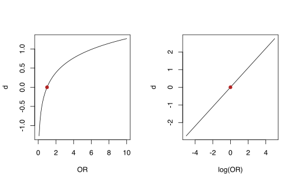
Inference
Wald tests
The basic approach when doing inference with GLM is interpreting the Wald test of each model coefficients. The Wald test is calculated as follows:
\[ z = \frac{\beta_i - \beta_0}{\sigma_{\beta_i}} \]
Where \(\beta\) is the regression coefficients, \(\beta_0\) is the value under the null hypothesis (generally 0) and \(\sigma_{\beta_i}\) is the standard error. P-values and confidence intervals can be calculated based on a standard normal distribution.
Wald-type confidence intervals
Wald-type confidence interval (directly from model summary), where \(\Phi\) is the cumulative Gaussian function qnorm():
\[ 95\%CI = \hat \beta \pm \Phi(\alpha/2) SE_{\beta} \]
#> # A tibble: 2 × 4
#> Estimate Std..Error z.value Pr...z..
#> <dbl> <dbl> <dbl> <dbl>
#> 1 -0.575 0.295 -1.95 0.0508
#> 2 1.42 0.427 3.33 0.000855#> [1] -1.152824 2.124464Profile likelihood confidence intervals
The computation is a little bit different and they are not always symmetric:
Profile likelihood confidence intervals
You can use the plot_param() function (quite overkilled):
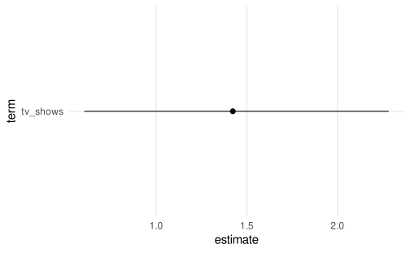
Confidence intervals
When calculating confidence intervals it is important to consider the link function. In the same way as we compute the inverse logit function on the parameter value, we could revert also the confidence intervals. IMPORTANT, do not apply the inverse logit on the standard error and then compute the confidence interval.
Confidence intervals1
Confidence intervals
The same principle holds for predicted probabilities. First compute the intervals on the logit scale and then transform-back on the probability scale:
fits <- dat |>
select(tv_shows) |>
distinct() |>
add_predict(fit, se.fit = TRUE)
fits$p <- plogis(fits$fit)
fits$lower <- plogis(with(fits, fit - 2*se.fit))
fits$upper <- plogis(with(fits, fit + 2*se.fit))
fits#> # A tibble: 2 × 7
#> tv_shows fit se.fit residual.scale p lower upper
#> <dbl> <dbl> <dbl> <dbl> <dbl> <dbl> <dbl>
#> 1 1 0.575 0.295 1 0.640 0.497 0.762
#> 2 0 -1.15 0.331 1 0.240 0.140 0.380Anova
With multiple predictors, especially with categorical variables with more than 2 levels, we can compute the an anova-like analysis individuating the effect of each predictor. In R we can do this using the car::Anova() function. Let’s simulate a model with a 2x2 interaction:
#> # A tibble: 6 × 4
#> id x1 x2 y
#> <int> <fct> <fct> <int>
#> 1 1 a c 1
#> 2 2 a d 0
#> 3 3 b c 1
#> 4 4 b d 1
#> 5 5 a c 1
#> 6 6 a d 0Anova
We can fit the most complex model containing the two main effects and the interaction. I set the contrasts for the two factors as contr.sum()/2 that are required for a proper analysis of factorial designs:
fit_max <- glm(y ~ x1 + x2 + x1:x2, data = dat, family = binomial(link = "logit")) # same as x1 * x2
summary(fit_max)#>
#> Call:
#> glm(formula = y ~ x1 + x2 + x1:x2, family = binomial(link = "logit"),
#> data = dat)
#>
#> Deviance Residuals:
#> Min 1Q Median 3Q Max
#> -1.1213 -0.9005 -0.5350 1.2346 2.0074
#>
#> Coefficients:
#> Estimate Std. Error z value Pr(>|z|)
#> (Intercept) -0.8864 0.2138 -4.147 3.37e-05 ***
#> x11 0.7921 0.4275 1.853 0.0639 .
#> x21 0.9462 0.4275 2.213 0.0269 *
#> x11:x21 -0.4649 0.8551 -0.544 0.5867
#> ---
#> Signif. codes: 0 '***' 0.001 '**' 0.01 '*' 0.05 '.' 0.1 ' ' 1
#>
#> (Dispersion parameter for binomial family taken to be 1)
#>
#> Null deviance: 148.26 on 119 degrees of freedom
#> Residual deviance: 139.86 on 116 degrees of freedom
#> AIC: 147.86
#>
#> Number of Fisher Scoring iterations: 4Anova
Anova
Then using car::Anova(). For each effect we have the \(\chi^2\) statistics and the associated p-value. The null hypothesis is that the specific factor did not contribute in reducing the residual deviance.
Model comparison
The table obtained with car::Anova() is essentially a model comparison using the Likelihood Ratio test. This can be done using the anova(...) function.
\[\begin{align*} D = 2 (log(\mathcal{L}_{full}) - log(\mathcal{L}_{reduced})) \\ D \sim \chi^2_{df_{full} - df_{reduced}} \end{align*}\]
Model comparison
To better understanding, the x2 effect reported in the car::Anova() table is a model comparison between a model with y ~ x1 + x2 and a model without x2. The difference between these two model is the unique contribution of x2 after controlling for x1:
fit <- glm(y ~ x1 + x2, data = dat, family = binomial(link = "logit"))
fit0 <- glm(y ~ x1, data = dat, family = binomial(link = "logit"))
anova(fit0, fit, test = "LRT") # ~ same as car::Anova(fit_max)#> # A tibble: 2 × 5
#> `Resid. Df` `Resid. Dev` Df Deviance `Pr(>Chi)`
#> <dbl> <dbl> <dbl> <dbl> <dbl>
#> 1 118 145. NA NA NA
#> 2 117 140. 1 4.92 0.0266Model comparison
The model comparison using anova() (i.e., likelihood ratio tests) is limited to nested models thus models that differs only for one term. For example:
fit1 and fit2 are non-nested because we have the same number of predictors (thus degrees of freedom). fit3 and fit1/fit2 are nested because fit3 is more complex and removing one term we can obtain the less complex models.
Model comparison
#> # A tibble: 2 × 5
#> `Resid. Df` `Resid. Dev` Df Deviance `Pr(>Chi)`
#> <dbl> <dbl> <dbl> <dbl> <dbl>
#> 1 118 145. NA NA NA
#> 2 118 143. 0 1.59 NA#> # A tibble: 2 × 5
#> `Resid. Df` `Resid. Dev` Df Deviance `Pr(>Chi)`
#> <dbl> <dbl> <dbl> <dbl> <dbl>
#> 1 118 145. NA NA NA
#> 2 117 140. 1 4.92 0.0266Information Criteria
As for standard linear models I can use the Akaike Information Criteria (AIC) or the Bayesian Information Criteria (BIC) to compare non-nested models. The downside is not having a properly hypothesis testing setup.
Marginal Means
For post-hoc contrasts you can use the emmeans package both for numerical but especially categorical predictors. Let’s simulate a 2x2 interaction:
dat <- sim_design(100, cx = list(x1 = c("a", "b"), x2 = c("c", "d")), contrasts = contr.sum2)
dat <- sim_data(dat, plogis(qlogis(0.25) + 0 * x1_c + 2 * x2_c + 2 * x1_c * x2_c))
fit <- glm(y ~ x1 * x2, data = dat, family = binomial(link = "logit"))
summary(fit)#>
#> Call:
#> glm(formula = y ~ x1 * x2, family = binomial(link = "logit"),
#> data = dat)
#>
#> Deviance Residuals:
#> Min 1Q Median 3Q Max
#> -1.5096 -0.6866 -0.2468 0.8782 2.6482
#>
#> Coefficients:
#> Estimate Std. Error z value Pr(>|z|)
#> (Intercept) -1.1449 0.1755 -6.524 6.86e-11 ***
#> x11 -0.4326 0.3510 -1.232 0.218
#> x21 2.5113 0.3510 7.155 8.37e-13 ***
#> x11:x21 3.4372 0.7020 4.896 9.76e-07 ***
#> ---
#> Signif. codes: 0 '***' 0.001 '**' 0.01 '*' 0.05 '.' 0.1 ' ' 1
#>
#> (Dispersion parameter for binomial family taken to be 1)
#>
#> Null deviance: 502.99 on 399 degrees of freedom
#> Residual deviance: 386.90 on 396 degrees of freedom
#> AIC: 394.9
#>
#> Number of Fisher Scoring iterations: 6Marginal Means
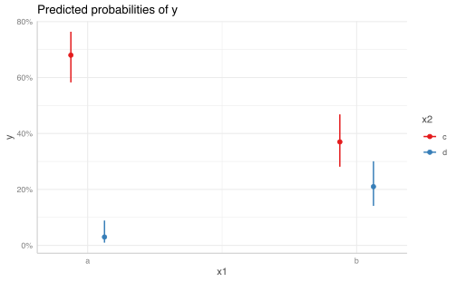
Marginal Means
emmeans is a very powerful and complicate package (documentation). Firstly we can estimate the marginal means of the conditions:
#> x1 x2 emmean SE df asymp.LCL asymp.UCL
#> a c 0.754 0.214 Inf 0.334 1.174
#> b c -0.532 0.207 Inf -0.938 -0.126
#> a d -3.476 0.586 Inf -4.625 -2.327
#> b d -1.325 0.246 Inf -1.806 -0.844
#>
#> Results are given on the logit (not the response) scale.
#> Confidence level used: 0.95Marginal Means
We can also calculate the marginal means on the response scale:
#> x1 x2 prob SE df asymp.LCL asymp.UCL
#> a c 0.68 0.0466 Inf 0.58264 0.7639
#> b c 0.37 0.0483 Inf 0.28127 0.4685
#> a d 0.03 0.0171 Inf 0.00971 0.0889
#> b d 0.21 0.0407 Inf 0.14111 0.3008
#>
#> Confidence level used: 0.95
#> Intervals are back-transformed from the logit scaleMarginal Means
Crucially we can compute the contrasts (i.e., the post-hoc tests). Notice that they are computed on the link-function scale:
emmeans(fit, pairwise ~ x1 | x2)$contrasts
#> x2 = c:
#> contrast estimate SE df z.ratio p.value
#> a - b 1.29 0.298 Inf 4.314 <.0001
#>
#> x2 = d:
#> contrast estimate SE df z.ratio p.value
#> a - b -2.15 0.636 Inf -3.385 0.0007
#>
#> Results are given on the log odds ratio (not the response) scale.
emmeans(fit, pairwise ~ x1 | x2, type = "response")$contrasts
#> x2 = c:
#> contrast odds.ratio SE df null z.ratio p.value
#> a / b 3.618 1.0786 Inf 1 4.314 <.0001
#>
#> x2 = d:
#> contrast odds.ratio SE df null z.ratio p.value
#> a / b 0.116 0.0739 Inf 1 -3.385 0.0007
#>
#> Tests are performed on the log odds ratio scaleMarginal Means
Notice the order of the terms to change the actual type of contrasts:
emmeans(fit, pairwise ~ x2 | x1)$contrasts
#> x1 = a:
#> contrast estimate SE df z.ratio p.value
#> c - d 4.230 0.624 Inf 6.777 <.0001
#>
#> x1 = b:
#> contrast estimate SE df z.ratio p.value
#> c - d 0.793 0.321 Inf 2.468 0.0136
#>
#> Results are given on the log odds ratio (not the response) scale.
emmeans(fit, pairwise ~ x2 | x1, type = "response")$contrasts
#> x1 = a:
#> contrast odds.ratio SE df null z.ratio p.value
#> c / d 68.71 42.89 Inf 1 6.777 <.0001
#>
#> x1 = b:
#> contrast odds.ratio SE df null z.ratio p.value
#> c / d 2.21 0.71 Inf 1 2.468 0.0136
#>
#> Tests are performed on the log odds ratio scalePlotting effects
Marginal effects
When plotting a binomial GLM the most useful way is plotting the marginal probabilities and standard errors/confidence intervals for a given combination of predictors. Let’s make an example for:
- simple GLM with 1 categorical/numerical predictor
- GLM with 2 numerical/categorical predictors
- GLM with interaction between numerical and categorical predictors
Marginal effects
A general workflow could be:
- fit the model
- use the
predict()function giving the grid of values on which computing predictions - calculating the confidence intervals
- plotting the results
Everything can be simplified using some packages to perform each step and returning a plot:
allEffects()from theeffects()package (return a base R plot)ggeffect()from theggeffect()package (return aggplot2object)plot_modelfrom thesjPlotpackage (similar toggeffect())
1 categorical predictor
In this situation we can just plot the marginal probabilities for each level of the categorical predictor. Plotting our exam dataset:
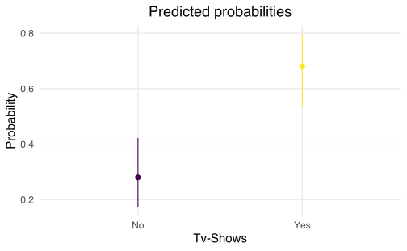
1 numerical predictor
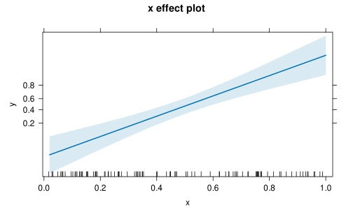
allEffects()
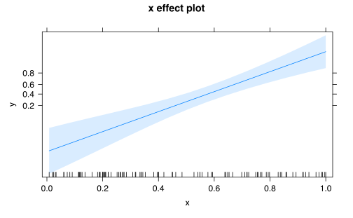
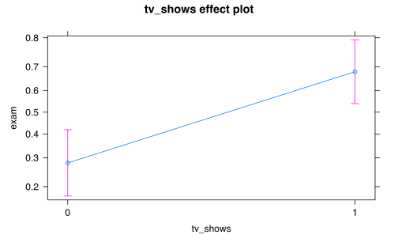
ggeffect()/plot_model()
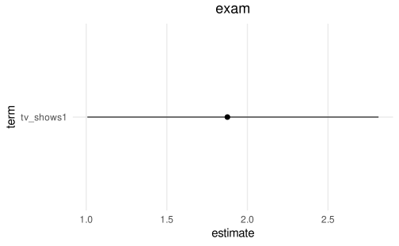
Plotting coefficients
Sometimes could be useful to plot the estimated sampling distribution of a coefficient. For example, we can plot the tv_shows effect on our example. I’ve written the plot_param() function that directly create a basic-plot given the model and the coefficient name. The plot highlight the null value and the 95% Wald confidence interval.
GLM - Diagnostic
GLM - Diagnostic
The diagnostic for GLM is similar to standard linear models. Some areas are more complicated for example residual analysis and goodness of fit. We will see:
- Deviance
- \(R^2\)
- Residuals
- Types of residuals
- Residual deviance
- Classification accuracy
- Outliers and influential observations
Likelihood
The likelihood is the joint probability of the observed data viewed as a function of the parameters.
\[ \log \mathcal{L}(\mu|x) = \sum^n_{i = 1} \log(\mu|x_i) \]
x <- rnorm(10) # data from normal distribution
# data
x
#> [1] -1.8694218 0.1218114 -1.3832446 0.9884026 -0.4416857 -0.3099413
#> [7] -0.8407464 -1.8613016 0.2581889 -0.1618937
# the model is a normal distribution with mu = 0 and sd = 1
dnorm(x, 0, 1)
#> [1] 0.06950842 0.39599347 0.15325971 0.24477683 0.36186586 0.38023327
#> [7] 0.28016802 0.07056927 0.38586439 0.39374833
# log likelihood
sum(log(dnorm(x, 0, 1)))
#> [1] -14.66699Likelihood
By summing the logarithm all the red segments we obtain the log likelihood of the model given the observed data.
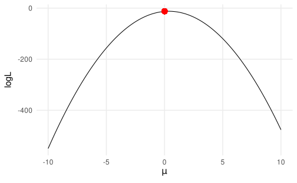
Likelihood
In the previous slide we tried only 3 values for the mean. Let’s image to calculate the log likelihood for several different means. The parameter with that is associated with highest likelihood is called the maximum likelihood estimator. In fact, the \(\mu = 0\) is associated with the highest likelihood.
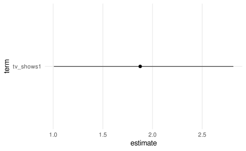
Deviance
The (residual) deviance in the context of GLM can be considered as the distance between the current model and a perfect model (often called saturated model).
\[ D_{res} = -2[\log(\mathcal{L}_{current}) - (\log\mathcal{L}_{sat})] \]
Where \(\mathcal{L}\) is the likelihood of the considered model (see the previous slides). Clearly, the lower the deviance, the closer the current model to the perfect model suggesting a good fit.
Deviance - Saturated model
The saturated model is a model where each observation \(x_i\) has a parameter.
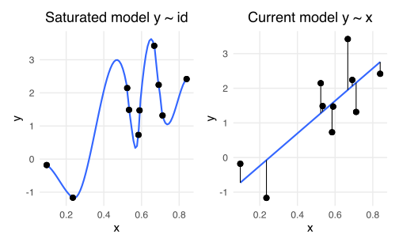
Deviance - Null model
Another important quantity is the null deviance that is expressed as the distance between the null model and the saturated model.
\[ D_{null} = -2[\log(\mathcal{L}_{null}) - (\log\mathcal{L}_{sat})] \]
The null deviance can be interpreted as the maximal deviance because is estimated using a model without predictors. A good model will have a residual deviance lower than the null model.
Deviance - Null model
Deviance - Likelihood Ratio Test
When we perform a likelihood ratio test (see previous slides) we are essentially comparing the residual deviance (or the likelihood) of two models.
Deviance - Likelihood Ratio Test
With the null model clearly the residual deviance is the same as the null deviance because we are not using predictors to reduce the deviance.
#>
#> Call:
#> glm(formula = y ~ 1, family = binomial(link = "logit"), data = dat)
#>
#> Deviance Residuals:
#> Min 1Q Median 3Q Max
#> -1.044 -1.044 -1.044 1.317 1.317
#>
#> Coefficients:
#> Estimate Std. Error z value Pr(>|z|)
#> (Intercept) -0.3228 0.2865 -1.126 0.26
#>
#> (Dispersion parameter for binomial family taken to be 1)
#>
#> Null deviance: 68.029 on 49 degrees of freedom
#> Residual deviance: 68.029 on 49 degrees of freedom
#> AIC: 70.029
#>
#> Number of Fisher Scoring iterations: 4Deviance - Likelihood Ratio Test
If the predictor x is useful in explaining y the residual deviance will be reduced compared to the null (overall deviance).
#>
#> Call:
#> glm(formula = y ~ x, family = binomial(link = "logit"), data = dat)
#>
#> Deviance Residuals:
#> Min 1Q Median 3Q Max
#> -2.9121 -0.4071 -0.2063 0.6259 1.7336
#>
#> Coefficients:
#> Estimate Std. Error z value Pr(>|z|)
#> (Intercept) -5.045 1.470 -3.432 0.000599 ***
#> x 9.535 2.659 3.586 0.000336 ***
#> ---
#> Signif. codes: 0 '***' 0.001 '**' 0.01 '*' 0.05 '.' 0.1 ' ' 1
#>
#> (Dispersion parameter for binomial family taken to be 1)
#>
#> Null deviance: 68.029 on 49 degrees of freedom
#> Residual deviance: 36.745 on 48 degrees of freedom
#> AIC: 40.745
#>
#> Number of Fisher Scoring iterations: 6Deviance - Likelihood Ratio Test
Comparing the two models we can understand if the deviance reduction can be considered statistically significant.
#> # A tibble: 2 × 5
#> `Resid. Df` `Resid. Dev` Df Deviance `Pr(>Chi)`
#> <dbl> <dbl> <dbl> <dbl> <dbl>
#> 1 49 68.0 NA NA NA
#> 2 48 36.7 1 31.3 0.0000000223Notice that the difference between the two residual deviances is the test statistics that is distributed as a \(\chi^2\) with \(df = 1\).
Deviance - Likelihood Ratio Test
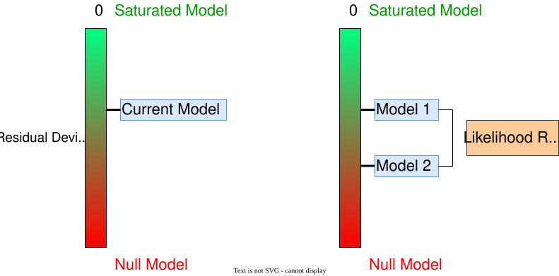
Deviance1
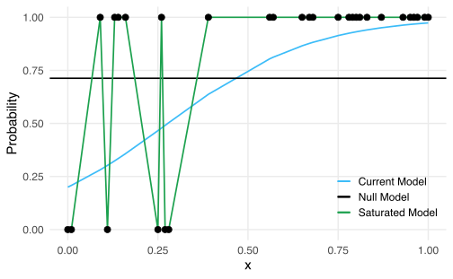
Deviance - Example
Let’s fit the three models:
Deviance - Example
We can calculate the residual deviance:
We can calculate the null deviance:
\(R^2\)
Compared to the standard linear regression, there are multiple ways to calculate an \(R^2\) like measure for GLMs and there is no consensus about the most appropriate method. There are some useful resources:
- https://stats.oarc.ucla.edu/other/mult-pkg/faq/general/faq-what-are-pseudo-r-squareds/
To note, some measures are specific for the binomial GLM while other measures can be applied also to other GLMs (e.g., the poisson)
\(R^2\)
We will se:
- McFadden’s pseudo-\(R^2\) (for GLMs in general)
- Tjur’s \(R^2\) (only for binomial/binary models)
McFadden’s pseudo-\(R^2\)
The McFadden’s pseudo-\(R^2\) compute the ratio between the log-likelihood of the intercept-only (i.e., null) model and the current model(McFadden, 1987):
\[ R^2 = 1 - \frac{\log(\mathcal{L_{current}})}{\log(\mathcal{L_{null}})} \]
There is also the adjusted version that take into account the number of parameters of the model. In R can be computed manually or using the performance::r2_mcfadden():
Tjur’s \(R^2\)
This measure is the easiest to interpret and calculate but can only be applied for binomial binary models (Tjur, 2009). Is the absolute value of the difference between the proportions of correctly classifying \(y = 1\) and \(y = 0\) from the model:
\[\begin{align*} p_1 = p(y_i = 1 |\hat y_i = 1) \\ p_2 = p(y_i = 0 |\hat y_i = 0) = 1 - p_1 \\ R^2 = |p_1 - p_2| \end{align*}\]
Residuals
The main problem of GLM is that the mean and the variance are linked. For example, the mean of a binomial distribution is \(np\) and the variance is \(np(1-p)\). In the standard linear model we have two parameters, \(\mu\) and the residual \(\sigma\) that are independent.
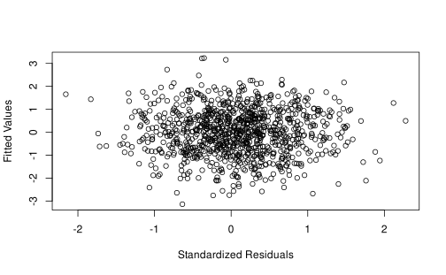
Residuals
When using a linear model (thus assuming a constant \(\sigma\) and independence between mean and variance) the residuals pattern is very different:
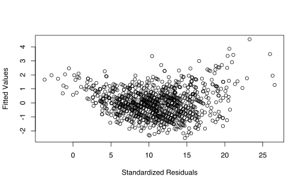
Residuals
As for standard linear models there are different types of residuals:
- raw (response) residuals
- pearson residuals
- deviance residuals
- standardized residuals
Raw Residuals
Raw residuals, also called response residuals are the simplest type of residuals. They are calculated as in standard regression as:
\[\begin{align*} r_i = y_i - \hat y_i \end{align*}\]
Where \(\hat y_i\) are the fitted values where the inverse of the link function has been applied.
In R:
#> 1 2 3 4 5
#> 0.56826521 0.18039223 0.07097155 0.56848124 0.04399144The problem is that in GLMs the mean and the variance of the distribution are not independent, creating problems in residual analysis.
Raw Residuals
We can use the function car::residualPlot() to plot different type of residuals against fitted values:
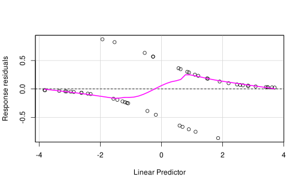
Why raw residuals are problematic?
This plot1 shows an example with the same residual for two different \(x\) values on a Poisson GLM. Beyond the model itself, the same residual can be considered as extreme for low \(x\) values and plausible for high \(x\) values:
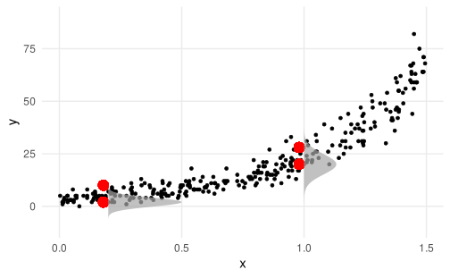
Binned (raw) Residuals
Gelman and colleagues Gelman & Hill (2006) proposed a type of residuals called binned residuals to solve the problem of the previous plot for Binomial GLMs:
- divide the fitted values into \(n\) bins. The number is arbitrary but we need each bin to have enough observation to compute a reliable average
- calculate the average fitted value and residual for each bin
- for each bin we can compute the standard error as \(SE = \frac{\hat p_j (1 - p_j)}{n_j}\) where \(p_j\) is the average fitted probability and \(n_j\) is the number of observation in the bin \(j\)
- Then we can plot each bin and the confidence intervals (e.g., as \(\pm 2*SE\)) where ~95% of binned residuals should be within the CI if the model is true
Binned (raw) Residuals
We can use the arm::binnedplot() function to automatically create and plot the binned residuals:
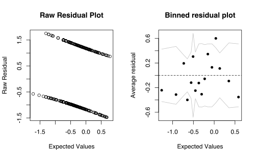
Pearson residuals
Pearson residuals are raw residuals divided by the standard deviation of each residual. Given that the mean-variance relationship of GLMs, dividing by the standard deviation partially solve the mean-variance relationship. The denominator can be calculated just using the appropriate variance formula for that specific GLM.
\[ r_i = \frac{y_i - \hat y_i}{\sqrt{V(\hat y_i)}} \]
Pearson vs Raw residuals
We can see the difference for a Poisson model1 when using raw vs pearson residuals. The non-constant variance is controlled on the right.
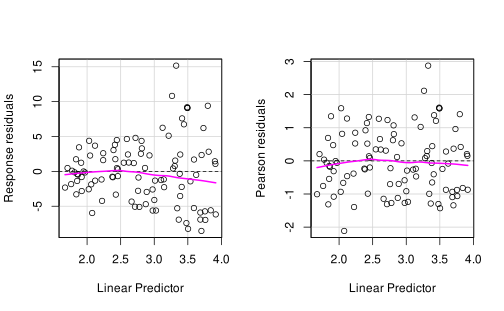
Pearson residuals
For the Binomial (Bernoulli) GLM, the variance is calculated as \(\hat p(1 - \hat p)\) where \(\hat p\) is the residual value.
\[ r_i = \frac{y_i - \hat y_i}{\sqrt{\hat y_i(1 - \hat y_i)}} \]
Deviance residuals
Deviance residuals are based on the residual deviance that we defined before. In fact, the residual deviance was just the sum of squared deviance residuals.
\[ r_i = sign(y_i - \hat y_i) \sqrt{-2[\log \mathcal{L}y_{i_{current}} - \log \mathcal{L}y_{i_{saturated}}]} \] Where \(sign\) is the sign of the raw residual \(i\). For the Bernoulli model the \(\log \mathcal{L}y_{i_{saturated}}\) is always 0.
Deviance Residuals
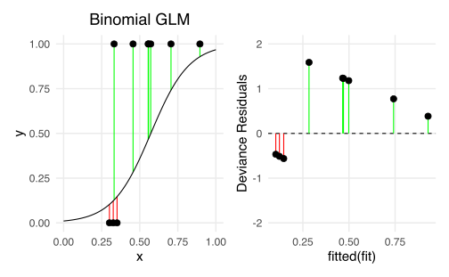
Deviance Residuals
To calculate and demonstrate manually the deviance residuals we can compute them manually in R:
Deviance Residuals
#> 1 2 3 4 5 6 7 8 9 10 11 12 13 14 15 16 17 18 19 20 21 22 23 24 25 26
#> 0 0 0 0 0 0 0 0 0 0 0 0 0 0 0 0 0 0 0 0 0 0 0 0 0 0
#> 27 28 29 30 31 32 33 34 35 36 37 38 39 40 41 42 43 44 45 46 47 48 49 50
#> 0 0 0 0 0 0 0 0 0 0 0 0 0 0 0 0 0 0 0 0 0 0 0 0#> 1 2 3 4 5
#> -0.2370588 0.3033530 -1.0310244 0.2331303 -0.8429485#> 1 2 3 4 5
#> -0.2370588 0.3033530 -1.0310244 0.2331303 -0.8429485Quick recap about hat values in linear regression
The hat matrix \(H\) is calculated as \(H = X \left(X^{\top} X \right)^{-1} X^{\top}\) is a \(n \times n\) matrix where \(n\) is the number of observations. The diagonal of the \(H\) matrix contained the hat values or leverages.
The \(i^{th}\) leverage score (\(h_{ii}\)) is interpreted as the weighted distance between \(x_i\) and the mean of \(x_i\)’s. In practical terms is the \(i^{th}\) observed value influence the \(i^{th}\) fitted value. An high leverage suggest that the observation is far from the mean of predictors and have an high influence on the fitted values.
- \(h_{ii}\) ranges between 0 and 1
- The sum of all \(h_{ii}\) values is the number of parameters \(p\)
- As a rule of thumb, an observation have an high leverage if \(h_{ii} > 2 \bar h\) where \(\bar h\) is the average hat value
Quick recap about hatvalues in linear regression
For a simple linear regression (\(y \sim x\)) the hat values are calculated as:
\[ h_i = \frac{1}{n} + \frac{(X_i - \bar X)^2}{\sum^n_{j = 1}(X_i - \bar X)^2} \]
In R the function hatvalues() return the diagonal of the \(H\) matrix for glm and lm:
#> 1 2 3 4 5 6 7
#> 0.02874015 0.03492581 0.03968557 0.02782301 0.04357230 0.04652508 0.04435804
#> 8 9 10
#> 0.04012613 0.03948651 0.04743780To note, for GLM and multiple regression in general, the equation is different and more complicated but the intepretation and the R implementation is the same.
Standardized Residuals
Both the response, pearson and deviance residuals can be considered as raw residuals. We can standardize residuals by dividing for the standard error computed with the hat values. In this way, the distribution will be approximately normal with \(\mu = 0\) and \(\sigma = 1\).
\[ r_{s_i} = \frac{r_i}{\sqrt{(1 - \hat h_{ii})}} \]
Where \(r_i\) can be raw, pearson or deviance residuals.
Standardized Residuals
In R they can be extracted using rstandard():
Standardized Residuals
We can try to manually calculate the residuals to better understand.
yhat <- fitted(fit) # fitted
yi <- fit$y # observed
hi <- hatvalues(fit) # diagonal of the hat matrix
# pearson residuals
pi <- (yi - yhat) / sqrt(yhat * (1 - yhat))
# standardized
pis <- pi / sqrt(1 - hi)
pis[1:5]#> 1 2 3 4 5
#> -0.1712897 0.2208858 -0.8546823 0.1683326 -0.6678440#> 1 2 3 4 5
#> -0.1712897 0.2208858 -0.8546823 0.1683326 -0.6678440Standardized Residuals
# deviance (for binomial GLM the loglik of the saturated model is 0)
di <- sign(yi - yhat) * sqrt(-2*log(dbinom(y, 1, yhat)))
# standardized
dis <- di / sqrt(1 - hi)
dis[1:5]#> 1 2 3 4 5
#> -0.2405406 0.3087934 -1.0521126 0.2364427 -0.8619359#> 1 2 3 4 5
#> -0.2405406 0.3087934 -1.0521126 0.2364427 -0.8619359Quantile residuals
The quantile residuals is another proposal for residual analysis. The idea is to map the quantile of the cumulative density function (CDF) of the random component into the CDF of the normal distribution.

Quantile residuals
Quantile residuals are very useful especially for Discrete GLMs (binomial and poisson) and are exactly normally distributed (under respected model assumptions) compared to deviance and pearson residuals (Dunn & Smyth, 1996). They can be calculated using the statmod::qresid(fit) function. Authors suggest to run the function 4 times to disentagle between the randomization and the systematic component.
Quantile residuals
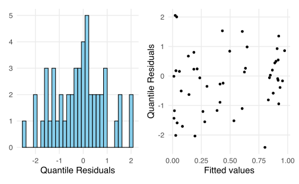
More on residuals
Residuals for GLMs are complicated. To have a more detailed and clear overview see:
Classification accuracy/Error rate
The error rate (ER) is defined as the proportion of cases for which the deterministic prediction i.e. guessing \(y_i = 1\) if \(logit^{-1}(\hat y_i) > 0.5\) and guessing \(y_i = 0\) if \(logit^{-1}(\hat y_i) > 0.5\) is wrong. Clearly, \(1 - ER\) is the classification accuracy.
I wrote the error_rate function that simply compute the error rate of a given model:
Classification accuracy/Error rate
We could compare the error rate of a given model with the error rate of the null model or another similar model (with a model comparison approach):
#> [1] 0.48The error rate of the null model is 3.429 times greater than the actual model.
Classification accuracy/Error rate
For a given model, the error rate should be less than \(0.5\), otherwise setting all \(\beta\)’s to 0 (i.e., null model) would be considered a better model (Gelman et al., 2020).
For example if the average \(p\) in a dataset is \(\overline p = 0.3\) means that a null model would have an error rate of \(0.3\) and a classification accuracy of \(1 - \overline p = 0.7\).
Including predictors we aim to reduce the error rate (compared to the null model) because the ability to correctly classify an observation increase.
The error rate can be misleading, see Gelman et al. (2020) (pp. 255-256)
Outliers and influential observations
Identification of influential observation and outliers of GLMs is very similar to standard regression models. We will briefly see:
- Cook Distances
- DFBETAs
Cook Distances
The Cook Distance of an observation \(i\) measured the impact of that observation on the overall model fit. If removing the observation \(i\) has an high impact, the observation \(i\) is likely an influential observation. For GLMs they are defined as:
\[\begin{align*} D_i = \frac{r_i^2}{\phi p} \frac{h_{ii}}{1 - h_{ii}} \end{align*}\]
Where \(p\) is the number of model parameters, \(r_i\) are the standardized pearson residuals (rstandard(fit, type = "pearson")) and \(h_{ii}\) are the hatvalues (leverages). \(\phi\) is the dispersion parameter of the GLM that for binomial and poisson models is fixed to 1 (see Dunn (2018, Table 5.1)) Usually an observation is considered influential if \(D_i > \frac{4}{n}\) where \(n\) is the sample size.
DFBETAs
DFBETAs measure the impact of the observation \(i\) on the estimated parameter \(\beta_j\):
\[\begin{align*} DFBETAS_i = \frac{\beta_j - \beta_{j(i))}}{\sigma_{\beta_{j(i)}}} \end{align*}\]
Where \(i\) denote the parameters and standard error on a model fitted without the \(i\) observation1. Usually an observation is considered influential if \(|DFBETAs_{i}| > \frac{2}{\sqrt{n}}\) where \(n\) is the sample size.
Extracting influence measures
In R we can use the influence.measures() function to calculate each influence measure explained before1.
#> dfb.1_ dfb.x dffit cov.r cook.d hat
#> 1 -0.04419414 0.04109800 -0.04442749 1.070827 0.0004340963 0.02874015
#> 2 -0.04672053 0.05681844 0.06310261 1.075710 0.0008828590 0.03492581
#> 3 -0.11865551 0.05713533 -0.23265873 1.028011 0.0150937972 0.03968557
#> 4 -0.03348170 0.03972704 0.04294688 1.069920 0.0004054759 0.02782301
#> 5 -0.14588644 0.10150547 -0.19921442 1.051194 0.0101596403 0.04357230
#> 6 -0.07575414 0.10700698 0.14303484 1.074641 0.0048052405 0.04652508The first two columns are the DFBETAs for each parameter, the cook.d columns contains the Cook Distances and hat is the diagonal of the \(H\) matrix.
Plotting influence measures
I wrote the cook_plot() function to easily plot the cook distances along with the identification of influential observations:
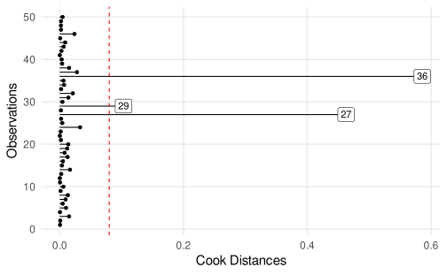
Plotting influence measures
I wrote the dfbeta_plot() function to easily plot the cook distances along with the identification of influential observations:
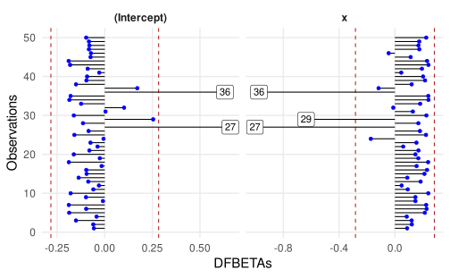
Binomial vs Binary
There are several practical differences between binomial and binary models:
- data structure
- fitting function in R
- residuals and residual deviance
- type of predictors
Binomial vs Binary data structure
The most basic Binomial regression is a vector of binary \(y\) values and a continuous or categorical predictor. Let’s see a common data structure in this case:
Code
#> # A tibble: 9 × 3
#> id x y
#> <chr> <chr> <chr>
#> 1 1 0.85 1
#> 2 2 0.16 0
#> 3 3 0.08 0
#> 4 4 0.17 0
#> 5 ... ... ...
#> 6 27 0.52 1
#> 7 28 0.64 1
#> 8 29 0.11 0
#> 9 30 0.54 1Binomial vs Binary data structure
Or equivalently with a categorical variable:
n <- 15
x <- c("a", "b")
dat <- sim_design(n, cx = list(x = x))
b0 <- qlogis(0.4)
b1 <- log(odds_ratio(0.7, 0.4))
dat |>
sim_data(plogis(b0 + b1*x_c), "binomial") |>
dplyr::select(-x_c, -lp) |>
filor::trim_df(4)#> # A tibble: 9 × 3
#> id x y
#> <chr> <chr> <chr>
#> 1 1 a 1
#> 2 2 b 0
#> 3 3 a 0
#> 4 4 b 0
#> 5 ... ... ...
#> 6 27 a 0
#> 7 28 b 1
#> 8 29 a 0
#> 9 30 b 0Binomial vs Binary data structure
When using a Binomial data structure we count the number of success for each level of \(x\). nc is the number of 1 responses, nf is the number of 0 response out of nt trials:
Code
#> # A tibble: 9 × 4
#> x nc nf nt
#> <chr> <chr> <chr> <chr>
#> 1 0 0 10 10
#> 2 0.05 0 10 10
#> 3 0.1 1 9 10
#> 4 0.15 0 10 10
#> 5 ... ... ... ...
#> 6 0.85 9 1 10
#> 7 0.9 8 2 10
#> 8 0.95 9 1 10
#> 9 1 10 0 10Binomial vs Binary data structure
With a categorical variable we have essentially a contingency table:
Binomial vs Binary: data structure
Clearly, expanding or aggregating data is the way to convert a binary into a binomial data structure and the opposite:
Binomial vs Binary: data structure
Binomial vs Binary: multilevel disclaimer
Clearly, in the previous examples, each row correspond to a single observation (in the binary model) or a condition (in the binomial model). Furthermore each row/observation/participants is assumed to be independent.
If participants performed multiple trials for each condition, we can still use a binomial or binary model BUT we need to take into account the multilevel structure.
In practice, we need to use a mixed-effects GLM, for example with the
lme4::glmer()package specifying the appropriate random structure.
Binomial vs Binary: - fitting function in R
There is a single way to implement a binary model in R and two ways for the binomial version:
# binary regression
glm(y ~ x, family = binomial(link = "logit"))
# binomial with cbind syntax, nc = number of 1s, nf = number of 0s, nc + nf = nt
glm(cbind(nc, nf) ~ x, family = binomial(link = "logit"))
# binomial with proportions and weights, equivalent to the cbind approach, nt is the total trials
glm(nc/nt ~ x, weights = nt, binomial(link = "logit"))Binomial vs Binary: residuals and residual deviance
A more relevant difference is about the residual analysis. The binary regression has different residuals compared to the binomial model fitted on the same dataset1.
Binomial vs Binary: residuals and residual deviance
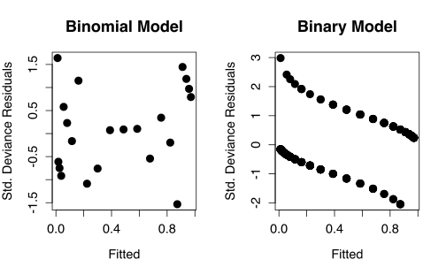
Binomial vs Binary: residuals and residual deviance
The residual deviance is also different. In fact, there is more residual deviance on the binary compared to the binomial model. However, comparing two binary and binomial models actually leads to the same conclusion. In other terms the deviance seems to be on a different scale1:
Binomial vs Binary: residuals and residual deviance
In fact, if we compare the full model with the null model in both binary and binomial version, the LRT is the same but the deviance is on a different scale. Comparing a binary with a binomial model could be completely misleading.
anova(fit_binomial, fit0_binomial, test = "Chisq")
#> # A tibble: 2 × 5
#> `Resid. Df` `Resid. Dev` Df Deviance `Pr(>Chi)`
#> <dbl> <dbl> <dbl> <dbl> <dbl>
#> 1 19 14.4 NA NA NA
#> 2 20 148. -1 -133. 8.27e-31
anova(fit_binary, fit0_binary, test = "Chisq")
#> # A tibble: 2 × 5
#> `Resid. Df` `Resid. Dev` Df Deviance `Pr(>Chi)`
#> <dbl> <dbl> <dbl> <dbl> <dbl>
#> 1 208 156. NA NA NA
#> 2 209 289. -1 -133. 8.27e-31Binomial vs Binary: type of predictors
This point is less relevant in this course but important in general. Usually, binary regression is used when the predictor is at the trial level whereas binomial regression is used when the predictor is at the participant level. When both levels are of interests one should use a mixed-effects model where both levels can be modeled.
- the probability of correct responses during an exam as a function of the question difficulty (each trial/row could have a different \(x\) level)
- the probability of passing the exam as a function of the high-school background regardless of having multiple trials, each trial/row has the same \(x_i\) for the participant \(i\)
Binomial vs Binary: type of predictors
The probability of correct responses during an exam as a function of the question difficulty
- each question (i.e., trial) has a 0/1 response and a difficulty level
- we are modelling a single participant, otherwise we need a multilevel (mixed-effects) model
Code
#> # A tibble: 9 × 4
#> id question difficulty y
#> <chr> <chr> <chr> <chr>
#> 1 1 1 1 1
#> 2 1 2 3 1
#> 3 1 3 3 1
#> 4 1 4 1 0
#> 5 ... ... ... ...
#> 6 1 27 1 1
#> 7 1 28 5 1
#> 8 1 29 1 0
#> 9 1 30 1 1Binomial vs Binary: type of predictors
the probability of passing the exam as a function of the high-school background
- each “background” has different students that passed or not the exam (0/1)
#> # A tibble: 4 × 4
#> background nc nf nt
#> <chr> <chr> <chr> <chr>
#> 1 math 20 10 30
#> 2 chemistry 16 4 20
#> 3 art 4 6 10
#> 4 sport 15 5 20Or the binary version:
#> # A tibble: 9 × 5
#> y background nc nf nt
#> <chr> <chr> <chr> <chr> <chr>
#> 1 1 math 20 10 30
#> 2 1 math 20 10 30
#> 3 1 math 20 10 30
#> 4 1 math 20 10 30
#> 5 ... ... ... ... ...
#> 6 0 sport 15 5 20
#> 7 0 sport 15 5 20
#> 8 0 sport 15 5 20
#> 9 0 sport 15 5 20Binomial vs Binary: type of predictors
- To note that despite we can convert between the binary/binomial, the two models are not always the same. The high-school background example can be easily modelled either with a binary or binomial model because the predictor is at the participant level that coincides with the trial level.
- On the other side, the question difficulty example can only be modelled using a binary regression because each trial (0/1) has a different value for the predictor
- To include both predictors or to model multiple participants on the question difficulty example we need a mixed-effects model where both levels together with the repeated-measures can be handled.
- a very clear overview of this topic can be found here https://www.rensvandeschoot.com/tutorials/generalised-linear-models-with-glm-and-lme4/
Probit link
Probit link
- The mostly used link function when using a binomial GLM is the logit link. The probit link is another link function that can be used. The overall approach is the same between logit and probit models. The only difference is the parameter interpretation (i.e., no odds ratios) and the specific link function (and the inverse) to use.
- The probit model use the cumulative normal distribution but the actual difference with a logit functions is neglegible.
Probit link
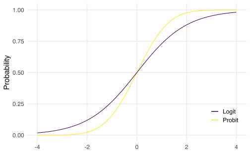
Probit link
When using the probit link the parameters are interpreted as difference in z-scores associated with a unit increase in the predictors. In fact probabilities are mapped into z-scores using the cumulative normal distribution.
Probit link
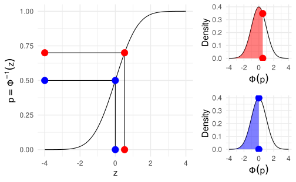
References
Agresti, A. (2015). Foundations of linear and generalized linear models. John Wiley & Sons. https://play.google.com/store/books/details?id=jlIqBgAAQBAJ
Borenstein, M., Hedges, L. V., Higgins, J. P. T., & Rothstein, H. R. (2009). Introduction to Meta-Analysis. https://doi.org/10.1002/9780470743386
Dunn, P. K., & Smyth, G. K. (1996). Randomized quantile residuals. Journal of Computational and Graphical Statistics: A Joint Publication of American Statistical Association, Institute of Mathematical Statistics, Interface Foundation of North America, 5, 236–244. https://doi.org/10.1080/10618600.1996.10474708
Dunn, P. K., & Smyth, G. K. (2018). Generalized linear models with examples in r. Springer. https://play.google.com/store/books/details?id=tBh5DwAAQBAJ
Gelman, A., & Hill, J. (2006). Data analysis using regression and multilevel/hierarchical models. Cambridge University Press. https://doi.org/10.1017/CBO9780511790942
Gelman, A., Hill, J., & Vehtari, A. (2020). Regression and other stories. Cambridge University Press. https://doi.org/10.1017/9781139161879
Knoblauch, K., & Maloney, L. T. (2012). Modeling psychophysical data in r. Springer New York. https://doi.org/10.1007/978-1-4614-4475-6
McFadden, D. (1987). Regression-based specification tests for the multinomial logit model. Journal of Econometrics, 34, 63–82. https://doi.org/10.1016/0304-4076(87)90067-4
Sánchez-Meca, J., Marín-Martínez, F., & Chacón-Moscoso, S. (2003). Effect-size indices for dichotomized outcomes in meta-analysis. Psychological Methods, 8, 448–467. https://doi.org/10.1037/1082-989X.8.4.448
Tjur, T. (2009). Coefficients of determination in logistic regression models—a new proposal: The coefficient of discrimination. The American Statistician, 63, 366–372. https://doi.org/10.1198/tast.2009.08210